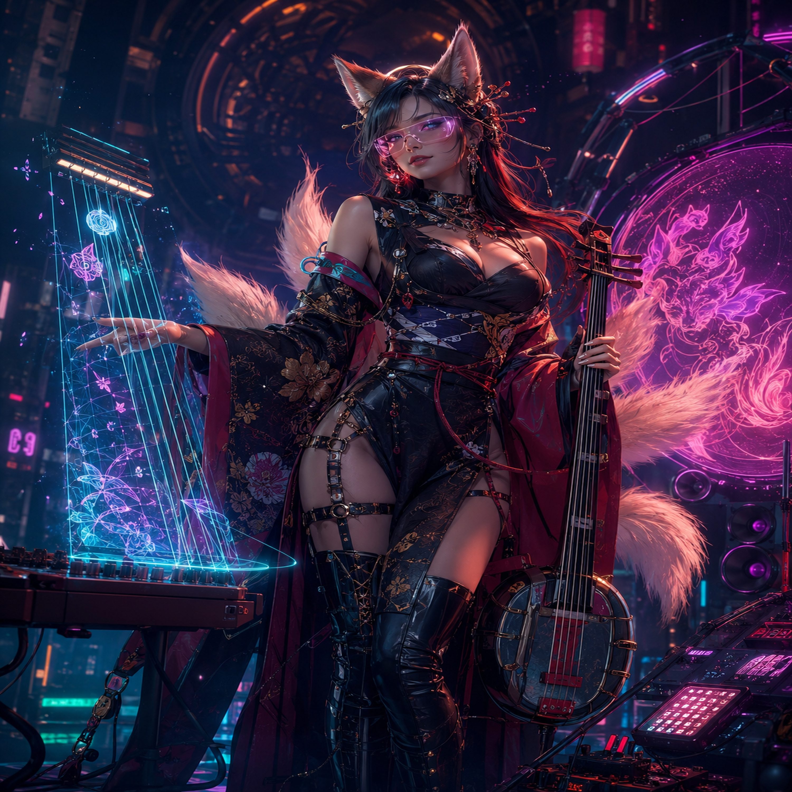
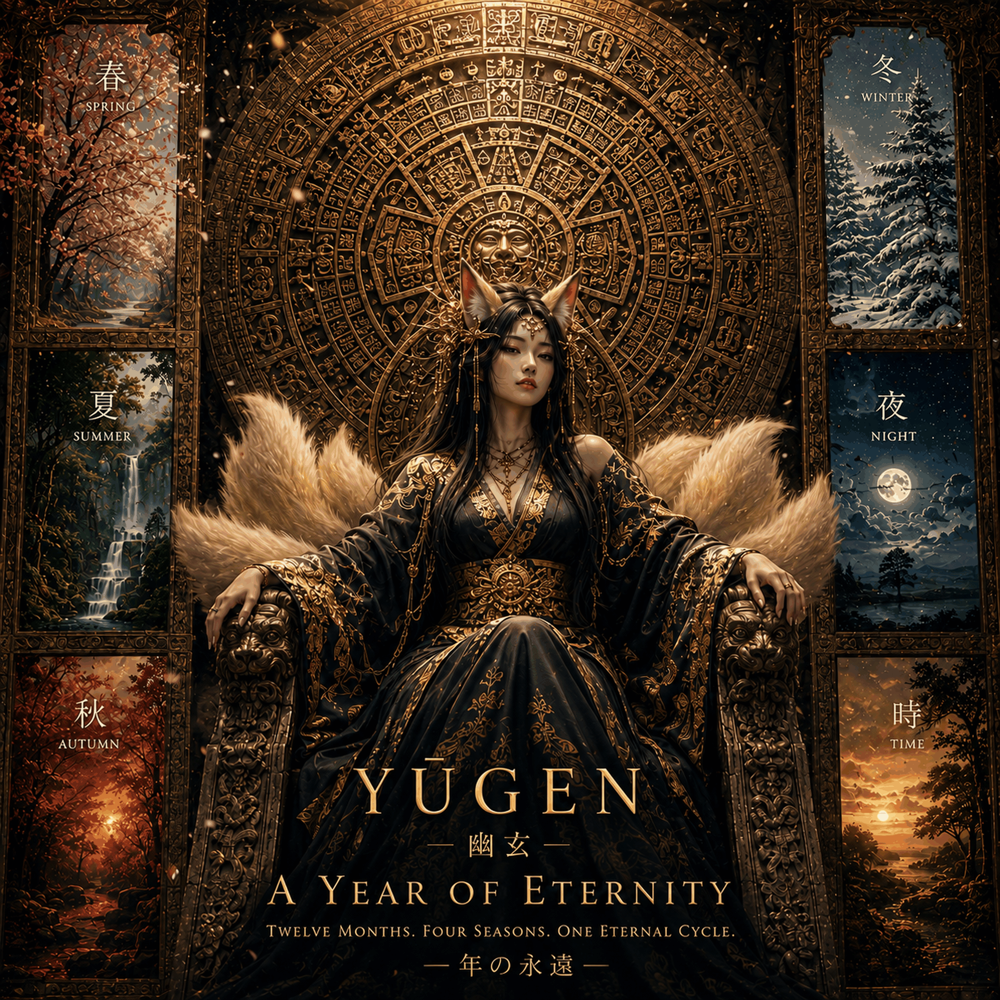
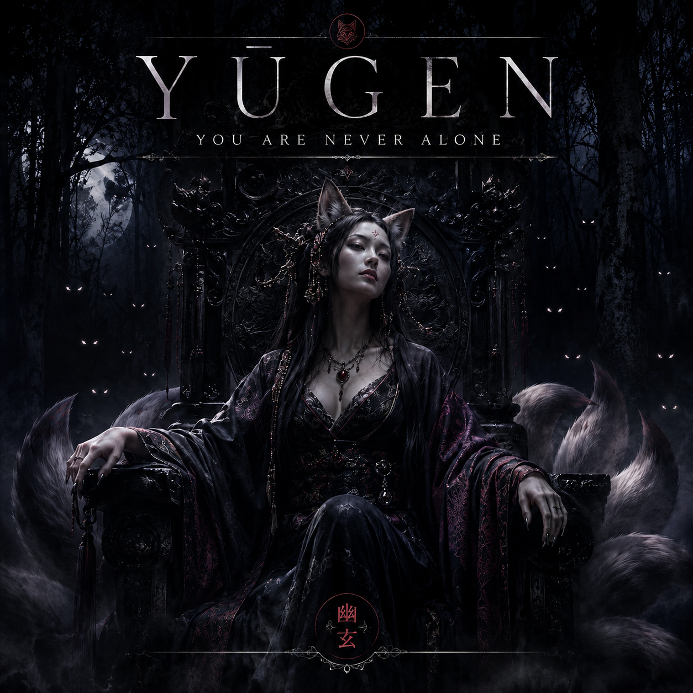

YŪGEN
An introduction—or a piece of folklore she has decided not to correct.
An old voice in new machinery
Nine tails. Nine centuries. More stories than she intends to tell you.
The woman behind the songs
YŪGEN is a roughly nine-hundred-year-old kitsune musician whose songs carry centuries of memory, folklore, teachers, lovers, strangers, and sounds the world forgot.
She is not a modern singer borrowing antique instruments. She is an old musical consciousness using new machinery—equally at home with shamisen, torch jazz, telegraph clicks, foxfire, hard techno, and the far side of the moon.
She values a good story over perfect history, especially when she was there.
Same woman. Different century. Different mood.
The door is open
These songs play directly from Howling Moon Creations. No outside platform required.
An introduction—or a piece of folklore she has decided not to correct.
Old summer drums remembered beneath the pulse of a future underground.
Four doors into the archive
Different centuries. Different moods. The same fox watching from the center of the storm.



Elsewhere, for the moment
While we bring more of YŪGEN's music home, the existing Bandcamp archive remains available as a temporary doorway.